ロウ
このページは character/pixel/sheet.py が書き出したものです。
画像と音はリポジトリのファイルを指しているだけなので、
グリッドを描き換えて render.py を流し直せば、開き直すだけで最新になります。
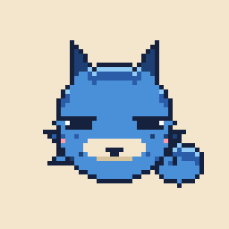
表情
体と毛は共通。顔と耳の角度だけ差し替えています。原本は .txt です。
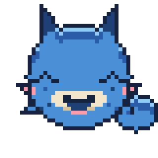
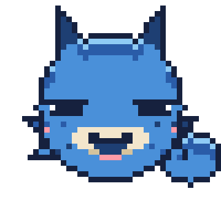
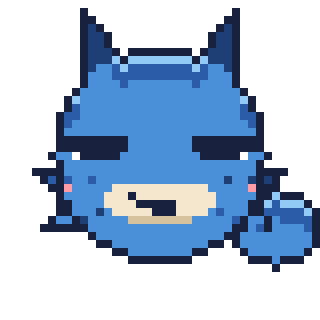
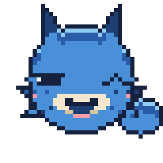
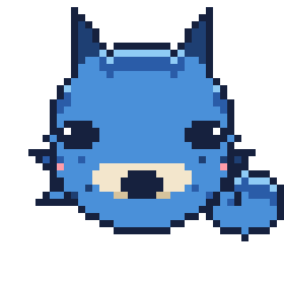
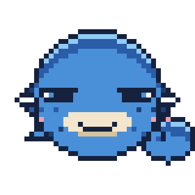
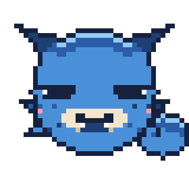
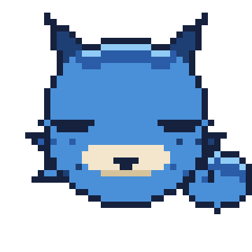
動き
絵を描き足さず、同じ絵を数 px ずらして作っています。
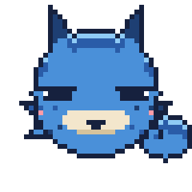
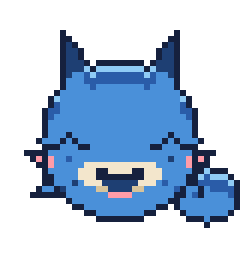
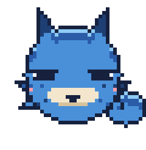
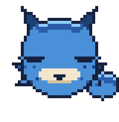
セリフと声
青い状態名が post.py を1回流したときに出るぶんです。
{} は実際の値で埋まります（下は見本の値）。
hello | ロウっていうんだ。よろしく。 | |
idle | 次は18時。それまで待ってるよ。 | |
posted | before と after の比較、投稿しておいたよ。 | |
daily | 今日は5件、投稿したよ。朝いちばんのがいちばん伸びてた。 | |
daily_plain | 今日は3件、投稿したよ。 | |
trend | ここ何日か夜の反応がよかったから、次は21時に回してみるね。 | |
adjust | 画像が縦長だったから、正方形に切り出しておいたよ。 | |
skipped | 先週と同じ画像だったから、これは見送っておいた。 | |
error | ごめん、接続切れで失敗した。もう一度やってみる。 | |
empty | 今日のぶんは、もう全部流したよ。 | |
streak | 14日、続けて出せてる。……べつに。 | |
surprise | 見たことない形式のファイルが来てるけど、これどう扱えばいい？ |
効果音
- 起きた
- ほえる
- 跳ねた
- しくじった
- ねむる
色
グリッドの1文字がそのまま1色。palette.json を書き換えると全部に効きます。
.透明##16213ED#2A5CA8N#1E3F73B#4A90D9L#8FCBF5C#F3E6CCS#D6C39CW#FFFFFFY#FFD05CP#FF9CA8
手元で動かす
python3 character/pixel/render.py # グリッド → PNG python3 character/pixel/anim.py # GIF python3 character/pixel/icon.py # アイコン python3 character/pixel/tts.py --all # セリフの声をまとめて作る python3 character/pixel/show.py # ターミナルに出す python3 post.py --dry-run # ロウが喋る投稿スクリプト python3 character/pixel/sheet.py # このページを作り直す